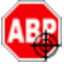
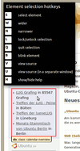
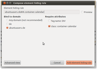

Element Hiding Helper
Achtung!
Da von Firefox alle sechs Wochen eine neue Version erscheint, kann dieser Artikel leider nicht – wie sonst in diesem Wiki üblich – mit einer bestimmten Ubuntu-Version getestet werden. Die Mozilla-Entwickler behalten sich vor, jederzeit neue Funktionen hinzuzufügen oder vorhandene wieder aus dem Programm zu entfernen. Unter solchen Umständen ist es nicht möglich, die Korrektheit der in diesem Artikel beschriebenen Informationen dauerhaft für eine Ubuntu-Version zu garantieren.

Die Erweiterung Element Hiding Helper  (EHH) setzt auf Adblock Plus auf und soll das Erstellen von Regeln zum Verstecken von Elementen vereinfachen. Mit der Firefox-Erweiterung Adblock Plus kann man z.B. verhindern, dass in Internetseiten eingebundene Werbung angezeigt wird.
(EHH) setzt auf Adblock Plus auf und soll das Erstellen von Regeln zum Verstecken von Elementen vereinfachen. Mit der Firefox-Erweiterung Adblock Plus kann man z.B. verhindern, dass in Internetseiten eingebundene Werbung angezeigt wird.
EHH hilft dem Nutzer zu versteckende Elemente auszuwählen und hakt die Attribute an, an denen das unerwünschte Element später wiedererkannt werden soll. Die Regel zum Verstecken des Elements wird dann automatisch generiert und der Filterliste von Adblock Plus hinzugefügt.
Hinweis:
Ist Adblock Plus (bzw. Adblock Edge) nicht installiert, kann man Element Hiding Helper auch nicht nutzen.
Inbetriebnahme¶
Die Inbetriebnahme von EHH ist sehr einfach. Hat man eine Adblock-Schaltfläche in der Menüleiste von Firefox, so findet man darin eine Option "Element zum Verstecken auswählen". Auf der EHH-Homepage ist die genaue Bedienung sehr gut erklärt . Hat man keinen Adblock-Button, so kann man EHH auch per Tastenkombination starten.
Tastenkombination¶
Als Standard sind die Tastenkombinationen
Strg +
⇧ +
K und
Strg +
⇧ +
S definiert. Bei den meisten Firefox-Installationen zeigt die Tastenkombination
Strg +
⇧ +
K jedoch die Web Konsole  , wohingegen
Strg +
⇧ +
S für die von vielen Anwendern genutzte Erweiterung NoScript verwendet wird.
, wohingegen
Strg +
⇧ +
S für die von vielen Anwendern genutzte Erweiterung NoScript verwendet wird.
Alternative Tastenkombination¶
Um sich eine alternative Tastenkombination einzurichten, wechselt man in die erweiterte Konfiguration about:config und trägt in den Filter extensions.elemhidehelper.selectelement_key ein. Nach einem Doppelklick auf diesen Eintrag kann man die eingetragenen Werte der Tastenkombinationen auf eine beliebige Kombination ändern. Man sollte darauf achten, dass die gewählte Kombination von keinem anderen Programm genutzt wird. Hat man sich diese Kombination eingerichtet, kann man diese nutzen, nachdem man den Firefox neu gestartet hat.
Benutzung¶
 Die Benutzung von EHH ist denkbar einfach: Man startet EHH per Klick auf den Adblock-Button oder aber per Tastenkombination. Man sieht daraufhin einen roten Rahmen, der dem Mauszeiger folgt und der bestimmte Elemente umrahmt, über die der Mauszeiger gefahren wird sowie die möglichen EHH-Tastenkombinationen. Das rechte Bild zeigt EEH bei der Umrandung (rot) des ubuntuusers-Kalenders und den Tastenkombinationen (schwarzer Kasten darüber).
Man fährt mit dem Mauszeiger über das zu versteckende Element, bis es umrahmt wird. Nun wird der Rahmen um dieses Element auf die größtmögliche Umrahmung per Tastendruck auf W ausgedehnt. Diesen Tastendruck wiederholt man so oft, bis ein anderes (weiteres) Element ebenfalls umrahmt würde. Dies ist natürlich zu viel, so dass man per Tastendruck auf N wieder um eine Stufe zurückspringt.
Ist man mit der Auswahl zufrieden, kann man das ausgewählte Element per Tastendruck auf B blinken lassen, um zu sehen, dass man auch die korrekte Auswahl getroffen hat. Ist auch diese Auswahl zufriedenstellend, drückt man auf S und öffnet damit die Attributauswahl.
Attributauswahl¶

In der Regel braucht man an dieser nichts mehr zu ändern. Die EEH-Auswahl ist mittlerweile sehr ausgereift. Im nebenstehenden Beispiel hat EHH die Blockierregel für den ubuntuusers-Kalender ubuntuusers.de##.calendar.overview korrekt ausgewählt. Durch einen Klick auf den Haken "Preview" kann man sich nochmals vergewissern, dass die getroffene Auswahl korrekt war.
Möchte man die Auswahl detaillierter angeben, kann man über die Schaltfläche "Advanced View" (Erweiterte Ansicht) weitere Einstellungen und Attribute angeben. Mit einem Klick auf "Basic View" (Normale Ansicht) gelangt man wieder zur einfachen Attributauswahl. Nach einem Klick auf "Add Element Hiding Rule" wird dieser Filter der eigenen Adblock-Filterliste („My Element Hiding Rules“) hinzugefügt.
Bedienelemente¶
| Bedienelemente von Element Hiding Helper | |
| Taste | Erklärung |
| S | Wählt das ausgewählte Element aus |
| W | Auswahl weiter |
| N | Auswahl enger |
| L | Auswahl sperren/entsperren |
| Q | Auswahl verlassen |
| B | Auswahl blinken lassen |
| V | Quellcode der Auswahl anschauen |
| U | Quellcode der Auswahl anschauen (seperates Fenster) |
| H | Hilfe anzeigen/verstecken |
Kritik¶
Inhaltsfilter aller Art lösen zum Teil Diskussion darüber aus, ob die Blockierung von Werbung dazu führen könnte, dass werbefinanzierte Angebote stark zurückgehen (Beispiel ). Auch gibt es einige Websitebetreiber, die dazu übergegangen sind, die Nutzung von Adblock zu erkennen und Gegenmaßnahmen zu ergreifen. So blenden einige Websites Warnmeldungen ein, die auf das Konzept der Werbefinanzierung hinweisen und um Fairness bitten. Andere Websites loggen Adblock-Nutzer zwangsweise aus, selbst wenn diese die Seite in ihre Whitelist eingetragen haben. Eine Abhilfe ist bisher nicht bekannt, sofern Adblock nicht komplett entfernt werden soll.
Links¶
Element Hiding Helper als Erweiterung auf addons.mozilla.org
Adblock - Adblock Plus im hiesigen Wiki
Adblock - Wikipedia
- Erstellt mit Inyoka
-
 2004 – 2017 ubuntuusers.de • Einige Rechte vorbehalten
2004 – 2017 ubuntuusers.de • Einige Rechte vorbehalten
Lizenz • Kontakt • Datenschutz • Impressum • Serverstatus -
Serverhousing gespendet von